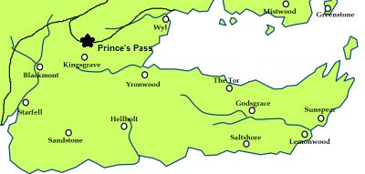

Tower of Joy
The Tower of Joy was a round tower in the south of Westeros, close to the Red Mountains of Dorne. It lay in the Prince’s Pass.
The tower was named Tower of Joy by Rhaegar Targaryen. It was used as a hideout by him, where he kept Lyanna Stark. Lyanna stayed there after Rhaegar left to lead his father, Aerys II’s war against Robert Baratheon’s rebellion. At the end of the War, Eddard Stark and six of his companions (Howland Reed, Lord Willam Dustin, Ethan Glover, Martyn Cassel, Theo Wull, and Ser Mark Ryswell) approached the tower. They found it guarded by three members of the Kingsguard: Ser Arthur Dayne, Ser Oswell Whent, and Lord Commander Gerold Hightower.
Map on Next page.
